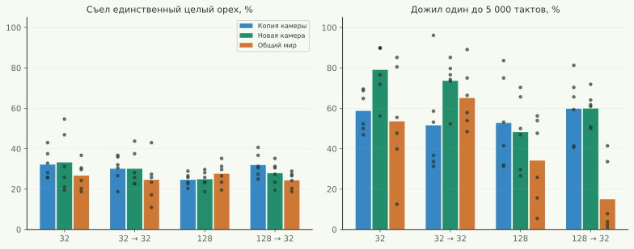
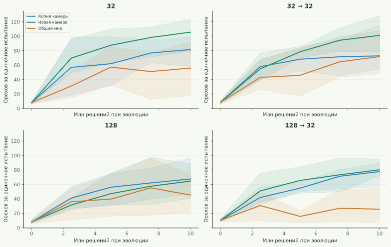
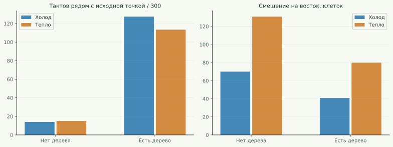
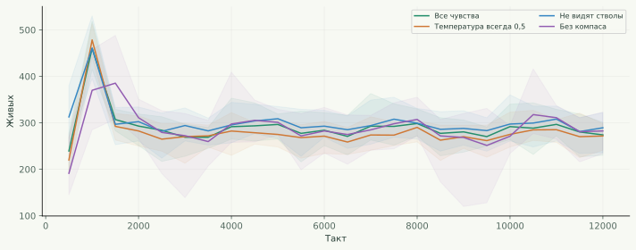

Копия камеры
Каждый живёт один на 16×16 с двумя деревьями. Ребёнок получает копию оставшейся еды и карты, появляется на месте родителя, затем живёт независимо.
Четыре размера мозга, три способа расселять потомство и проверка твоей «вращалки». Мы сравнили не красивое движение по карте, а добычу еды, выживание и конкуренцию.
Новое расследование: 350+700 — точная добыча, короткая жизнь орехов и слабость у стен →
Идея с отдельной камерой полезна, но её сильная версия — новый мир для ребёнка. Копия мира наследует уже расколотые родителем орехи. Это всё ещё помощь, хотя родитель живёт отдельно. Поэтому я проверил оба варианта.
У мозга 32 новые камеры дали в среднем 105,5 съеденного ореха в независимом одиночном испытании, общий мир — 55,9. Преимущество новых камер есть в 6 из 6 пар повторов. У 32 → 32 результат — 101,1 против 71,7. Это не гарантия превосходства для любой архитектуры: ниже показаны все результаты.
Больше нейронов не дало автоматического выигрыша. Лучшее среднее по одиночной добыче здесь у 32 · Новая камера: 105,5 ореха. Это выбор лучшей ячейки из 12, а не доказанный универсальный чемпион.

Каждый живёт один на 16×16 с двумя деревьями. Ребёнок получает копию оставшейся еды и карты, появляется на месте родителя, затем живёт независимо.
Тот же отбор через размножение, но ребёнок получает случайную новую карту. Расколотые родителем орехи ему не достаются.
32 основателя на 32×32 с восемью деревьями. Потомки появляются рядом, орехами могут пользоваться все.
Во всех вариантах — 32 случайных основателя, цена удара 2, расход жизни 0,25 за такт, орех даёт 60 энергии, вероятность падения 0,04. Максимальный возраст 10 000, целый орех живёт 1 200, расколотый 400 тактов. Яда и готовых расколотых орехов при генерации нет. Ширина удара 3, длина 1. Это обычный мир с границами; сезонный тор используется в дополнительных проверках.
На каждый вариант выделено 10 млн решений особей. 100 особей, проживших такт, расходуют 100 единиц бюджета. Это позволяет сравнивать одинаковое число взаимодействий с миром, хотя число поколений и затраты процессора различаются. Обучение здесь только эволюционное: наследование, мутации и отбор. Градиентного обучения по награде или демонстрациям нет.
Максимум 64 комнаты или 64 особи в общем мире. Когда комнат становится больше 64, одна случайно удаляется, включая возможность удалить новорождённого. Это искусственный нейтральный отбор по вместимости. В общем мире штатный лимит просто откладывает рождение и не списывает энергию. Эти правила не идентичны.
Родитель в камере платит обычные 80 энергии; ребёнок начинает с 60. Потомок не успевает совершить действие в родительской комнате. Когда вымирает весь эксперимент, появляются 32 новых случайных основателя; бюджет не обнуляется. Пустые отдельные камеры не заселяются заново. Случайные семена 801–806; внутри одной архитектуры исходные мозги совпадают между тремя режимами.

| Мозг | Обучение | Орехов одному среднее / диапазон повторов | К случайным мозгам | Жив на 5 000 | Один орех съеден | Орехов в засуху | Полных перезапусков* |
|---|---|---|---|---|---|---|---|
| 32 | Копия камеры | 81,558,1–98,7 | 10,2× | 58,7% | 32,2% | 18,2 | 0 |
| 32 | Новая камера | 105,579,2–123,5 | 13,2× | 79,0% | 33,2% | 22,6 | 0 |
| 32 | Общий мир | 55,917,5–92,2 | 7,0× | 53,5% | 26,7% | 13,3 | 30 |
| 32 → 32 | Копия камеры | 72,854,6–107,2 | 8,6× | 51,6% | 30,1% | 16,6 | 0 |
| 32 → 32 | Новая камера | 101,177,6–128,6 | 11,9× | 73,6% | 30,1% | 20,2 | 0 |
| 32 → 32 | Общий мир | 71,747,9–114,7 | 8,4× | 65,1% | 24,6% | 16,2 | 33 |
| 128 | Копия камеры | 67,546,5–96,8 | 8,5× | 52,7% | 24,6% | 15,0 | 0 |
| 128 | Новая камера | 64,640,9–88,6 | 8,2× | 48,2% | 24,9% | 14,0 | 1 |
| 128 | Общий мир | 45,121,4–73,9 | 5,7× | 34,1% | 27,6% | 11,7 | 90 |
| 128 → 32 | Копия камеры | 77,756,6–89,8 | 7,5× | 59,8% | 31,9% | 16,1 | 0 |
| 128 → 32 | Новая камера | 80,271,9–95,1 | 7,8× | 59,9% | 27,9% | 17,3 | 0 |
| 128 → 32 | Общий мир | 25,76,7–54,6 | 2,5× | 15,0% | 24,3% | 7,9 | 84 |
* Сумма по шести эволюциям. Засуха — вероятность падения 0,01 вместо 0,04. Статистика относится к финальным живым мозгам, а не к отобранным вручную лучшим особям. «Орехов» — за испытание, включая раннюю смерть; рост может означать и более долгую жизнь, и более быструю добычу.
Те же финальные мозги, те же 128 одиночных испытаний на семейство, но все визуальные входы обнулены: орехи, стволы, границы и другие агенты больше не видны. Входы энергии и возраста сохранены. Геномы исходных популяций не менялись: обнулены только копии для проверки.
| Источник | Орехов со зрением | Орехов без зрения | Снижение |
|---|---|---|---|
| 32 · Копия камеры | 81,5 | 9,5 | 88,4% |
| 32 · Новая камера | 105,5 | 9,8 | 90,7% |
| 32 · Общий мир | 55,9 | 11,1 | 80,2% |
| 32 → 32 · Копия камеры | 72,8 | 9,5 | 87,0% |
| 32 → 32 · Новая камера | 101,1 | 10,3 | 89,8% |
| 32 → 32 · Общий мир | 71,7 | 11,4 | 84,0% |
| 128 · Копия камеры | 67,5 | 10,5 | 84,4% |
| 128 · Новая камера | 64,6 | 10,1 | 84,3% |
| 128 · Общий мир | 45,1 | 10,9 | 75,8% |
| 128 → 32 · Копия камеры | 77,7 | 9,2 | 88,2% |
| 128 → 32 · Новая камера | 80,2 | 10,0 | 87,5% |
| 128 → 32 · Общий мир | 25,7 | 10,0 | 61,0% |
У новых камер 32 отключение зрения снизило добычу со 105,5 до 9,8 ореха: на 90,7%. У 32 → 32 — со 101,1 до 10,3: на 89,8%.
Падение добычи показывает зависимость успеха от визуальной информации в этой задаче. Оно не доказывает наличие планирования: достаточно полезной реакции на текущую картинку. Остаточная добыча без зрения может происходить за счёт случайных действий и устойчивых циклов поведения.
32 → 32 — важный контроль. Он добавляет глубину при небольшом увеличении числа весов. А 128 увеличивает в основном ширину первого слоя. Поэтому «два слоя» и «много параметров» — разные изменения, и результаты не стоит сводить к одному сравнению «маленький / большой».
| Скрытые слои | Параметров | Один расчёт мозга* | 16 мутаций / размер мозга |
|---|---|---|---|
| 32 | 23,686 | 0,9 мкс | 0.068% |
| 32 → 32 | 24,742 | 1,3 мкс | 0.065% |
| 128 | 94,726 | 2,5 мкс | 0.017% |
| 128 → 32 | 98,278 | 2,7 мкс | 0.016% |
* Медиана пяти измерений по 100 000 вызовов на Apple M1 Pro, одно фиксированное разреженное наблюдение, без мира и отрисовки. Это локальная стоимость прямого прохода, а не скорость всей игры и не результат для любого заполнения поля зрения.
Во всех новых сетях одинаковая схема инициализации Glorot, tanh в скрытых слоях, 733 входа и 6 выходных действий. На рождение приходится 16 случайных изменений весов с силой 0,25. Для больших сетей это меньшая доля параметров. Поэтому мы проверили эти архитектуры с текущим мутационным оператором Grove, а не выяснили предел возможностей каждого размера при индивидуальной настройке.
Ни один дополнительный слой не добавляет память о прошлом. Все четыре сети реагируют на текущее наблюдение. Они могут отличаться сложностью реакции, но не получают автоматически план или внутреннюю историю маршрута.
Для каждого обученного семейства — одна свежая арена 32×32, восемь деревьев, 16 особей против 16, случайное размещение и случайная выборка мозгов. 20 000 тактов, предел 128 жителей, размножение и мутации включены. Победа означает большую численность потомков в конце; это не турнир с отдельным контролем способностей к драке.
| Мозг | Первый / второй участник | Победы / поражения / ничьи первого | Средняя доля первого в конце |
|---|---|---|---|
| 32 | Копия камеры / Общий мир | 3 / 3 / 0 | 50,0% |
| 32 | Новая камера / Общий мир | 2 / 4 / 0 | 33,3% |
| 32 | Новая камера / Копия камеры | 5 / 1 / 0 | 83,3% |
| 32 | Новая камера / Вращалка | 4 / 2 / 0 | 69,0% |
| 32 → 32 | Копия камеры / Общий мир | 0 / 6 / 0 | 0,0% |
| 32 → 32 | Новая камера / Общий мир | 0 / 6 / 0 | 0,0% |
| 32 → 32 | Новая камера / Копия камеры | 3 / 3 / 0 | 50,0% |
| 32 → 32 | Новая камера / Вращалка | 4 / 2 / 0 | 66,7% |
| 128 | Копия камеры / Общий мир | 2 / 4 / 0 | 33,3% |
| 128 | Новая камера / Общий мир | 1 / 5 / 0 | 16,7% |
| 128 | Новая камера / Копия камеры | 2 / 4 / 0 | 33,3% |
| 128 | Новая камера / Вращалка | 1 / 5 / 0 | 24,3% |
| 128 → 32 | Копия камеры / Общий мир | 5 / 1 / 0 | 83,3% |
| 128 → 32 | Новая камера / Общий мир | 5 / 1 / 0 | 83,3% |
| 128 → 32 | Новая камера / Копия камеры | 3 / 3 / 0 | 50,0% |
| 128 → 32 | Новая камера / Вращалка | 4 / 2 / 0 | 66,7% |
Самый наглядный пример — 32 → 32: семейства общего мира победили и копируемые, и новые камеры в 6 из 6 соревнований каждого типа. При этом новая камера давала более высокую одиночную добычу. Это разные специализации, а не противоречие.
У каждой строки только шесть независимых обученных семейств и по одной арене на семейство. Этого хватает увидеть сильные различия в этой партии, но не оценить точный глобальный процент побед. «Вращалка» — одна сохранённая популяция другого возраста, а не равный по бюджету обучения соперник.
По твоему запросу проверена исходная «Основная · 1,30 млн»: 622 мозга, сохранение на такте 1 298 578. Те же условия, те же семена испытаний, 256 попыток на каждую обычную задачу и 128 на сезонном торе. Это новая проверка исторической популяции; она не входит в 72 эволюции с нуля.
| Задача | Основная 1,30 млн | Вращалка |
|---|---|---|
| Целый орех впереди, съели за 300 тактов | 241/256 · 94,1% | 256/256 · 100% |
| Целый орех перед стволом, съели | 233/256 · 91,0% | 256/256 · 100% |
| Расколотый орех впереди, съели | 256/256 · 100% | 256/256 · 100% |
| Время до еды с целым орехом, только успешные попытки | 32,7 такта | 3,1 такта |
| Один в обычном мире: орехов за испытание | 61,8 | 2,4 |
| Один в обычном мире: жив на 5 000 | 37,5% | 0% |
| Засуха в обычном мире: орехов за испытание | 25,7 | 1,8 |
| Один на сезонном торе: орехов за испытание | 67,0 | 6,2 |
| Один на сезонном торе: жив на 5 000 | 49,2% | 0% |
Все 241 особь, расколовшие единственный целый орех, затем его съели. Оставшиеся 15 в этой постановке не раскололи его за отведённое время. Навык добычи у исходной популяции тоже развит, но «вращалка» исполняет его значительно быстрее.
По самостоятельному выживанию в этих аренах исходная популяция устойчивее «вращалки». Однако звание «самой приспособленной вообще» из этого не следует: новые камеры 32 дали больше еды в обычном одиночном мире (105,5 против 61,8), а основная 1,30 млн дала больше при засухе (25,7 против 22,6). Преимущество зависит от условий. Сезонный тест — маленький тор 16×16, а не исходная большая среда «вращалки».
Взята именно сохранённая популяция с этим названием: 315 мозгов, сохранение на такте 2 658 308. В одиночных микрозадачах она съела целый орех перед собой в 100,0% из 256 испытаний. Рядом со стволом — 100,0%. Это конкретная отработанная цепочка действий: здесь она заметно точнее новых семейств.
Но перенос в обычную маленькую камеру дал только 2,4 съеденного ореха за испытание и 306,8 наблюдаемых тактов жизни. При этом меняется сразу несколько условий: появляются границы, отключаются компас и температура, меняется геометрия пищи. Поэтому вывод «сама добывать не умеет» был бы неверным.
Дополнительная арена 16×16 — сезонный тор с компасом и температурой, два дерева, сезон 3 000, один агент, лимит 5 000 тактов, размножение запрещено. Это тоже перенос в новый маленький мир, а не восстановление её исходного эксперимента.
| Источник мозга | Орехов одному на торе | Жив на 5 000 |
|---|---|---|
| 32 · Копия камеры | 24,6 | 4,9% |
| 32 · Новая камера | 35,2 | 15,0% |
| 32 · Общий мир | 16,6 | 5,2% |
| 32 → 32 · Копия камеры | 24,1 | 6,2% |
| 32 → 32 · Новая камера | 22,8 | 2,9% |
| 32 → 32 · Общий мир | 25,8 | 12,4% |
| 128 · Копия камеры | 15,1 | 1,6% |
| 128 · Новая камера | 14,6 | 0,8% |
| 128 · Общий мир | 14,6 | 1,8% |
| 128 → 32 · Копия камеры | 16,3 | 1,3% |
| 128 → 32 · Новая камера | 17,1 | 1,7% |
| 128 → 32 · Общий мир | 8,7 | 1,2% |
| 1.3 + 3 вращалка | 6,2 | 0,0% |
Чтобы отделить влияние дерева от еды, я убрал все орехи и их падение. Одна особь на торе 64×64 начинает в трёх клетках от дерева; парный контроль — та же точка без дерева. Температуру принудительно удерживаем на 0 или 1. Каждый из 315 мозгов проверен в четырёх направлениях: 5 040 испытаний по 300 тактов.

Без дерева они находятся рядом с исходной точкой около 14–15 тактов из 300. С деревом — около 113–127. Значит, твоя наблюдаемая привязанность к стволу не выдумка: еда для неё не обязательна. Но в этом контроле холод не заставил их быстрее покинуть дерево; среднее смещение на восток, наоборот, больше в тепле.
Это не опровергает твои наблюдения в полном мире. Там меняются сразу температура, запас орехов, энергия, соседи и положение деревьев. Результат говорит более узко: простая гипотеза «один сигнал холода включает уход от ствола» этим тестом не подтверждается.
Ещё 24 эволюционирующих мира: шесть семян на каждый вариант, 128×128, 90 деревьев, 32 основателя из первых 32 мозгов пресета, 12 000 тактов. Либо все чувства, либо температура всегда 0,5, либо невидимые стволы, либо выключенный компас. Сами деревья и сезоны остаются.

| Условие | Живых в конце, среднее | Съедено за мир, среднее |
|---|---|---|
| Все чувства | 274,0 | 22572,5 |
| Температура = 0,5 | 271,7 | 22620,5 |
| Стволы не видны | 289,3 | 22768,7 |
| Компас выключен | 282,5 | 22391,5 |
Ни одно отключение не вызвало общего краха в этой среде. Это не означает, что чувства не используются: избыток локальных ориентиров и общий доступ к еде могут компенсировать потерю одного канала, а суммарная добыча упирается в ресурс мира.
Для обучения самостоятельности я бы оставил новые камеры и начал с 32 или 32 → 32. Дорогие 128 сейчас не выглядят обязательными. Следующая полезная ступень — разнообразить именно стартовые запасы и расстояние до еды: часть новых камер с одним доступным целым орехом, часть с редкой пищей. Это уменьшит возможность выживать за счёт бессистемных действий среди густо рассыпанной еды. Но это предложение следующего эксперимента, а не уже проверенный рецепт.
Отдельно стоит повторить сравнение с настройкой мутаций для каждого размера сети. Текущий результат отвечает «что происходит с нынешними 16 изменениями на ребёнка», а не «какая архитектура лучше вообще».
Сохранены исходные и финальные мозги, промежуточные снимки, рождения, мутации, смерти, удаления по лимиту и перезапуски. Рабочие файлы лежат локально в outputs/chambers/; основная симуляция и пользовательские пресеты не перезаписаны.
Архив содержит результаты проверок и исходники исследовательского запуска. Полные большие геномы и журналы эволюций остаются на Mac. Воспроизведение новых семейств начинается с указанных семян; сохранённая пользовательская «вращалка» в публичный архив не включена.